x
rutas
· Ruta 1
Camino Real · Vía Verde
· Ruta 2
Camino Nava de Béjar · Las Mirandillas
· Ruta 3
El Molino · La Barregana
· Ruta 4
Los Llanos · El Parador
· Ruta 5
Subida a Tonda
entorno
· Fuentes de Béjar
· Geología y relieve
· Flora
· Fauna
galeria
mapas
contacto
· Formulario contacto
· Dirección
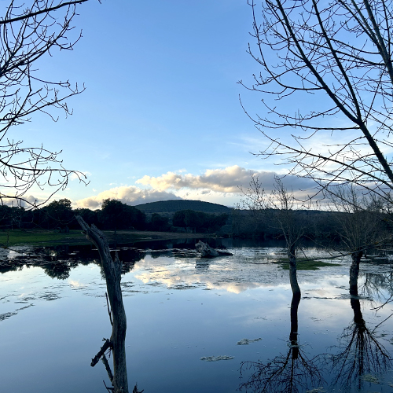
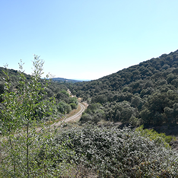
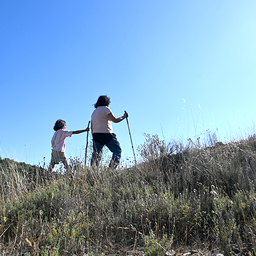
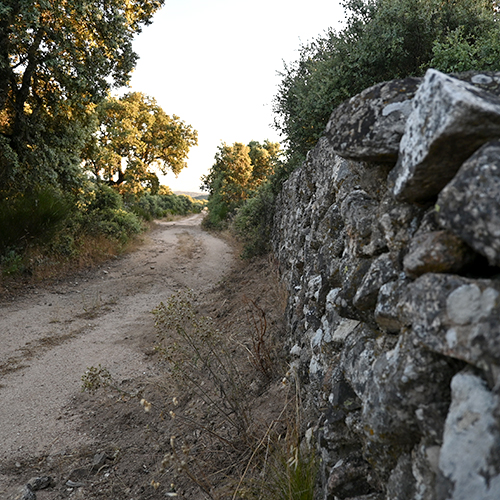
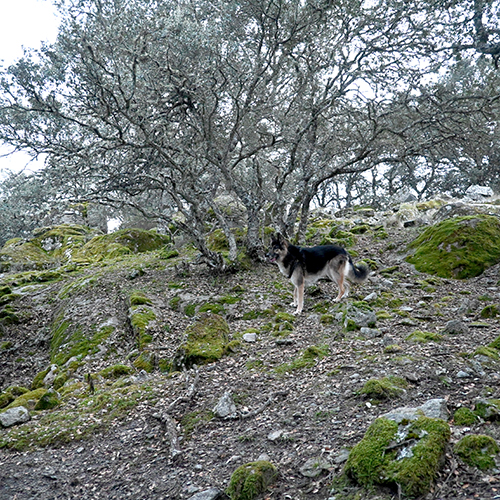
<
x
>
 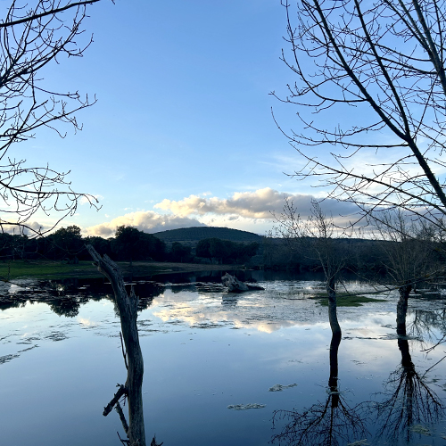
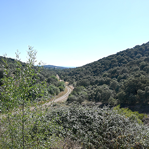
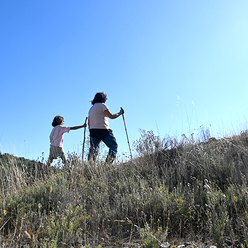
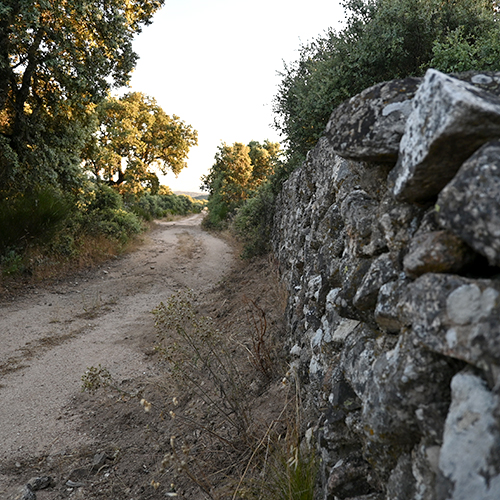
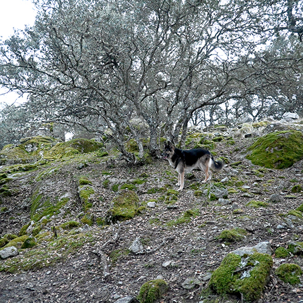
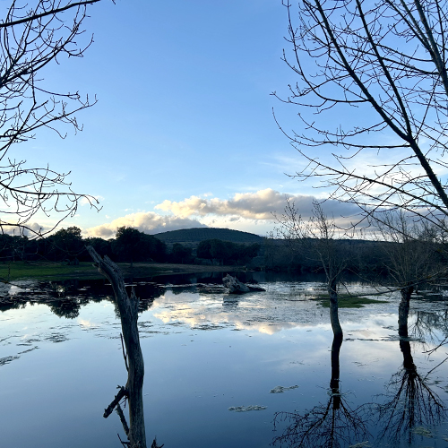
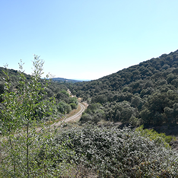
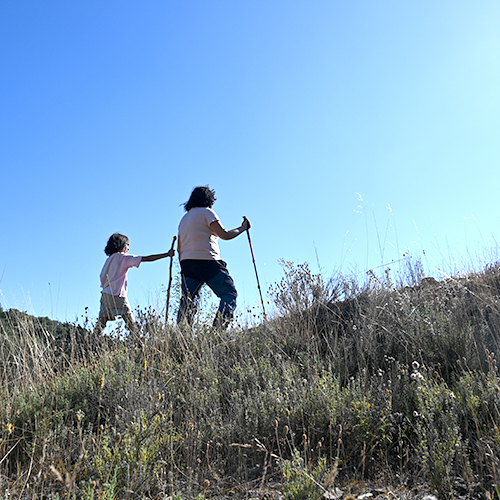
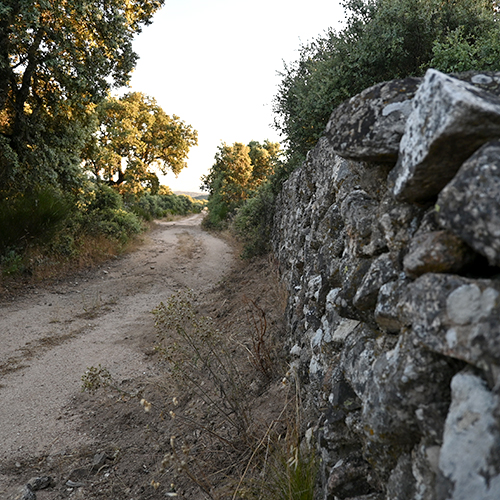
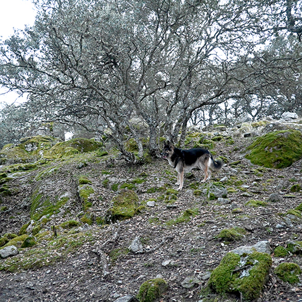